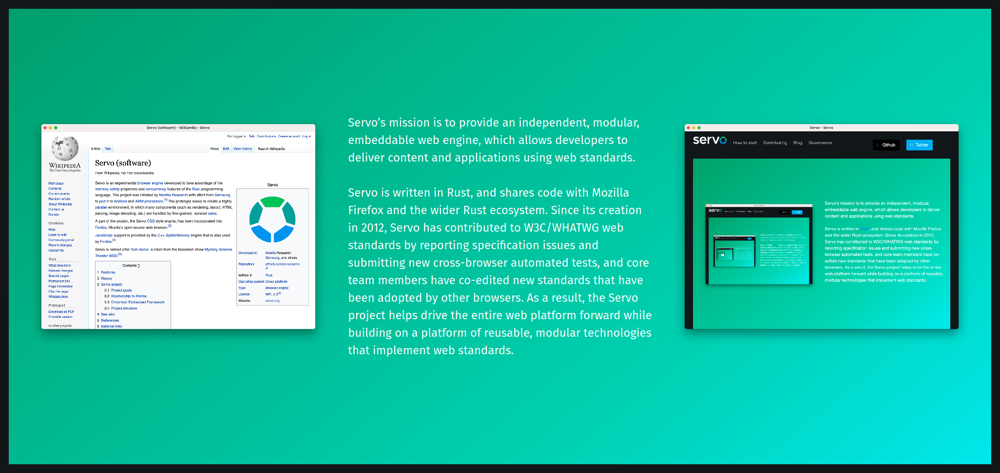
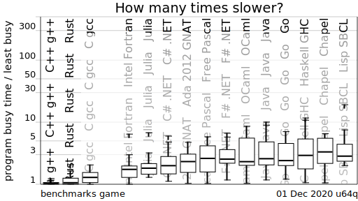
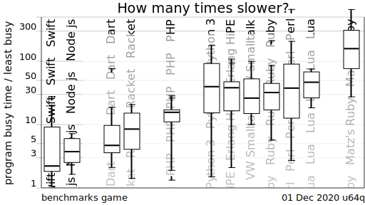
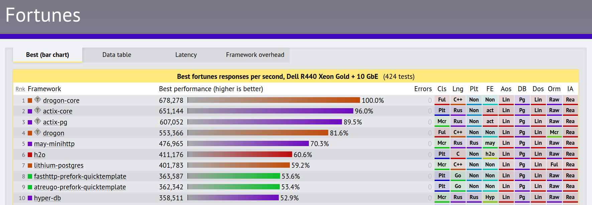

Rust
Safe systems programming

André Silva @andresilva
Software Engineer @ Parity Technologies
Disclaimer:
Most of the content here is taken from Alex Crichton's 2014 Rust Talk , with code snippets updated to work with Rust 1.48.0
This presentation is forked from https://github.com/azriel91/intro_to_rust.
What is Rust?
Rust is a systems programming language that runs blazingly fast, prevents almost all crashes, and eliminates data races.
fn main() { println!("hello, {}", "world!"); }
Why Rust?
Control vs Safety spectrum:
C/C++ Python
Rust
More control, more safety
Why Rust? (II)
Systems Programming Language
- Fine grained control over allocations
- No required garbage collector
- Minimal runtime
- "Close to the metal"
Runs Blazingly Fast
- Compiles to an executable binary
- LLVM backend ?
- LLVM's suite of optimizations
- Competitive with C/C++
Prevents Almost All Crashes
- Safe by default
- Sophisticated type system and analysis
- No segfaults
- No null pointers
- No dangling pointers
Eliminates Data Races
- Ownership guarantees
- Borrowing prevents dangling pointers
- Strong, safe abstractions
Problem

“Around 70% of our high severity security bugs are memory unsafety problems (that is, mistakes with C/C++ pointers). Half of those are use-after-free bugs.” - Chromium project
typedef struct Dummy { int a; int b; } Dummy;
void foo(void) {
Dummy *ptr = (Dummy *) malloc(sizeof(struct Dummy));
Dummy *alias = ptr;
free(ptr);
int a = alias.a; // use after free
free(alias); // double free
}
Solved by managed languages
Java, Python, Ruby, C#, Scala, Go...
- Restrict direct access to memory
- Run-time management of memory via periodic garbage collection
- No explicit malloc and free, no memory corruption issues
- But...
- Overhead of tracking object references
- Program behavior unpredictable due to GC (bad for real-time systems)
- Limited concurrency (global interpreter lock typical)
- Larger code size
- VM must often be included
- Needs more memory and CPU power (i.e. not baremetal)
Requirements for system programs
- Must be fast and have minimal runtime overhead
- Should support direct memory access, but be memory-safe
Who's Using Rust
Rust is using Rust
Makeup of code in the Rust repository (12 Dec 2020):
- Rust 94.4%
- HTML 3.3%
- Python 0.5%
- JavaScript 0.4%
- Makefile 0.3%
- Shell 0.3%
- Other 0.8%
Mozilla
Servo

- Experimental browser engine with a focus on performance and concurrency
- Developed to take advantage of the memory safety properties and concurrency features of the Rust programming language
Firefox
- Several components developed as part of Servo have been integrated into Firefox continuously:
Parity
- One of the early adopters of Rust (circa 2016)
- Working on decentralized software
- Building performance-critical networked applications
- More than a million lines of Rust code written
Main projects
- OpenEthereum
- Fast and feature-rich multi-network Ethereum client
- rust-libp2p
- A network stack for peer-to-peer enabled applications
- Substrate
- A next-generation framework for building blockchain-based applications
- Polkadot
- Polkadot is a network protocol that allows arbitrary data - not just tokens - to be transferred across blockchains
Ownership
Variables are moved to new locations, preventing the previous location from using it
There is only every one owner of data!
Problem
A common mistake in C:
int main() {
int *slot = malloc(sizeof(int));
*slot = 3;
helper(slot);
helper(slot); // use after free!
}
void helper(int *slot) {
printf("The number was: %d\n", *slot);
free(slot);
}
a.out(62940,0x7fff7b9ea310) malloc: *** error for object 0x7fecb0c03b10:
pointer being freed was not allocated
*** set a breakpoint in malloc_error_break to debug
zsh: abort ./a.out
Rust's way of representing this:
fn main() { let slot = Box::new(3); helper(slot); // moves the value! helper(slot); // error: use of moved value } fn helper(slot: Box<i32>) { println!("The number was: {}", slot); }
Transferring Ownership
fn helper() -> Box<i32> { let three = Box::new(3); return three; // transfer ownership } fn main() { // acquire ownership of return value let my_three = helper(); println!("my_three: {}", my_three); }
Transitivity
Ownership is a deep property of a type
struct A { b: B } struct B { c: Box<i32> } fn main() { let a: A = A { b: B { c: Box::new(2) } }; let c = a.b.c; let b: B = a.b; // error! (moved by `c`) }
Borrowing
Owned values can be borrowed in Rust to allow usage for a certain period of time.
// The `&` sigil means "borrowed reference" fn helper(_slot: &Vec<i32>) { /* ... */ } fn main() { let a = Vec::new(); // doesn't move! helper(&a); helper(&a); }
Lifetimes
Borrowed values are only valid for a particular lifetime
fn main() { let a: &i32; { let b = 3; a = &b; // error! `b` does not live long enough } println!("a: {}", a); }
fn main() { let b = 3; let a: &i32; a = &b; // ok, `b` has the same lifetime as `a` println!("a: {}", a); }
Moving
Borrowing prevents moving
fn work_with(_slot: Vec<i32>) { /* ... */ } fn main() { let a = vec![1]; let b = &a; work_with(a); // error! borrowed by 'b' println!("b: {:?}", b); }
fn work_with(_slot: Vec<i32>) { /* ... */ } fn main() { let a = Vec::new(); { let b = &a; println!("b: {:?}", b) } work_with(a); // ok }
Problem
A common mistake in C:
*int helper() {
int a = 3;
return &a;
}
int main(int argc, char const *argv[]) {
printf("%d\n", *helper());
return 0;
}
Rust's way of representing this:
fn main() { println!("Your number was: {}", *helper()); } fn helper<'a>() -> &'a i32 { let a = 3; return &a; }
fn main() { println!("Your number was: {}", *helper(&3)); } fn helper<'a>(value: &'a i32) -> &'a i32 { return value; }
Nesting
Borrows can be nested:
- Someone can borrow something you are borrowing.
- Someone can borrow part of the thing you are borrowing.
struct MyStruct { inner: i32 } fn do_print(value: &i32) { println!("value: {}", *value); } fn print(s: &MyStruct) { do_print(&s.inner); } fn main() { let s = MyStruct { inner: 3 }; print(&s); }
struct MyStruct { inner: i32 } fn get(s: &MyStruct) -> &i32 { &s.inner } fn main() { let s = MyStruct { inner: 3 }; let inner = get(&s); // same lifetime as `s` println!("inner: {}", inner); // essentially the same as let inner = &s.inner; println!("inner: {}", inner); }
Cloning
Borrowed values can become owned values through cloning.
Cloning is to make a deep duplicate of the memory of the borrowed value.
fn clone_vector(v: &Vec<i32>) -> Vec<i32> { v.clone() } fn main() { let mut v1 = vec![1, 2, 3]; let v2 = clone_vector(&v1); v1[0] = 0; println!("v1: {:?}", v1); println!("v2: {:?}", v2); }
Memory Management
Rust has fine-grained memory management, but is automatically managed once created.
Each variable has a scope it is valid for, and it is automatically deallocated when it goes out of scope.
fn main() { // `slot` is an *owned* value let slot = Box::new(3); // The slot goes out of scope here, it is free'd }
Reference Counting
Reference counting is another way of managing memory.
use std::rc::Rc; fn main() { let data = Rc::new(3); // reference count of 1 { let data2 = data.clone(); // reference count of 2 work_with(data2); // transfer ownership of `data2` } // reference count of 1 work_with(data); // transfer ownership of `data` } // reference count of 0, memory deallocated fn work_with(data: Rc<i32>) { println!("data: {}", data); }
This allows multiple structs to own a reference to the same chunk of memory. This is useful for sharing a 'context' object between processors, for example — one processor may add information to the context which allows other processors to reason over it.
Mutability
Values are immutable by default in Rust, and must be tagged as being mutable.
#![allow(unused)] fn main() { let a = 4; a = 5; // error! }
#![allow(unused)] fn main() { let mut a = 4; a = 5; // ok }
Mutability is also a part of the type of a borrowed pointer.
#![allow(unused)] fn main() { fn inc(i: &i32) { *i += 1; // error! } }
#![allow(unused)] fn main() { fn inc(i: &mut i32) { *i += 1; // ok } }
Borrow Mutability
Borrowed pointers may coerce:
#![allow(unused)] fn main() { let a = &mut 1; let b: &usize = a; // ok let c: &mut usize = b; // error! }
Values can be frozen by borrowing
#![allow(unused)] fn main() { let mut a = Vec::new(); { let b = &a; // freezes `a` a.push(1); // error! println!("b: {:?}", b); } a.push(2); // ok }
Owned Mutability
Mutability propagates deeply into owned types
struct A { b: B } struct B { c: usize } fn main() { let mut a = A { b: B { c: 2 } }; a.b.c = 3; a.b = B { c: 4 }; a = A { b: B { c: 5 } }; let frozen = a; frozen.b.c = 4; // error! }
Golden Rules
The holy grail of Rust
Learn these rules, and they will serve you well.
- You can't keep borrowing something after it stops existing
- One object may have many immutable references to it (
&T) - OR exactly one mutable reference (
&mut T) (not both) - That's it!

- TLDR: Aliasing XOR Mutability
What you get out of it
Iterator invalidation
- Iterator invalidation due to mutating a collection you're iterating over
- This pattern can be written in C, C++, Java, Python, Javascript...
- But may result in, e.g,
ConcurrentModificationException(at runtime!)
- But may result in, e.g,
#![allow(unused)] fn main() { let mut vs = vec![1, 2, 3, 4]; for v in &vs { vs.pop(); // ERROR: cannot borrow `vs` as mutable because // it is also borrowed as immutable } }
Use-after-free
- Valid in C/C++ and a common source of errors
#![allow(unused)] fn main() { let y: &i32; { let x = 5; y = &x; // error: `x` does not live long enough } println!("{}", *y); }
Resource leak
- Never forget to close a file or a socket ever again
use std::fs::File; use std::io::prelude::*; fn main() -> std::io::Result<()> { { let mut file = File::create("foo.txt")?; file.write_all(b"Hello, world!")?; // file is automatically closed here } Ok(()) }
Concurrency
What is concurrency
- One program with multiple threads of execution running at the same time
- Threads can share data without communication overhead
- (networking, inter-process communication channels, etc)
- Threads are more lightweight than individual processes
- No large OS context switch when switching between threads
Why is concurrency hard
#![allow(unused)] fn main() { /* thread 1 */ let mut y = &mut x; /* thread 1 */ *y = 1; /* thread 1 */ println!("{}", *y); // foo expects 1 // => 1 /* thread 2 */ let mut z = &mut x; /* thread 2 */ *z = 2; /* thread 2 */ println!("{}", *z); // bar expects 2 // => 2 }
- Sharing data: What if two threads try to write to the same piece of data at the same time?
- Data races: The behavior of the same piece of code might change depending on when exactly it executes
- Synchronization: How can I be sure all of my threads see the correct world view?
- Deadlock: How can you safely share resources across threads and ensure threads don't lock each other out of data access?
Concurrency in Rust
Using ownership to prevent data races.
Parallelism is achieved at the granularity of an OS thread.
use std::thread; use std::time::Duration; fn expensive_computation() { println!("expensive start"); thread::sleep(Duration::from_millis(500)); println!("expensive end"); } fn other_expensive_computation() { println!("other_expensive start"); thread::sleep(Duration::from_millis(500)); println!("other_expensive end"); } fn main() { // Spawn a child thread to be run in parallel thread::spawn(|| { expensive_computation(); }); other_expensive_computation(); }
Communication
Threads can communicate with channels
use std::sync::mpsc; use std::thread; use std::time::Duration; fn expensive_computation() -> i32 { thread::sleep(Duration::from_millis(500)); 123 } fn main() { let (tx, rx) = mpsc::channel(); thread::spawn(move || { tx.send(expensive_computation()).expect("Failed to send result"); }); // Do some work in the meantime let answer = rx.recv().expect("Failed to receive result"); println!("answer: {}", answer); }
Memory Safety
Safety is achieve by requiring that a closure owns captured variables.
#![allow(unused)] fn main() { let mut a = Vec::new(); // spawn a thread and move ownership of 'a' into it ::std::thread::spawn(move || { a.push("foo"); }); a.push("bar"); // error! }
Sharing Memory
Tasks can also share memory:
use std::collections::HashMap; use std::sync::Arc; use std::thread; fn main() { let mut map = HashMap::new(); map.insert("tomato", "red"); map.insert("celery", "green"); map.insert("carrot", "orange"); let arc1 = Arc::new(map); let arc2 = arc1.clone(); let t1 = thread::spawn(move || println!("Celery is `{}`", arc1["celery"])); let t2 = thread::spawn(move || println!("Carrots are `{}`", arc2["carrot"])); t1.join().unwrap(); t2.join().unwrap(); }
Language Constructs
Primitives
- Booleans: are true and false
- Integers: are both signed and unsigned. u8/i8, u16/i16, u32/i32, u64/i64, and u128/i128
- Floating point numbers: f32 and f64
- Tuples: are for grouping different types together (i32, f64, i8)
- Arrays: that are fixed size [u32; 3] is the type of [1, 2, 3]
- References: like pointers but safer. &i32 is the type of &5
- Slices: refer to parts of an array &[u8]
- char: is a single Unicode Scalar Value, and uses single quotes '🦀'
- &str: is an immutable UTF-8 string "this is a crab: 🦀"
Structs
struct Point { x: usize, y: usize, } fn main() { let p = Point { x: 1, y: 2 }; }
Tuples
fn main() { let pair = (2, 3); let (first, second) = pair; println!("pair: {:?}", pair); println!("first: {:?}, second: {:?}", first, second); }
Enums
#![allow(unused)] fn main() { enum Shape { Circle, Square } fn test(shape: Shape) { match shape { Circle => { /* ... */ } Square => { /* ... */ } } } }
"&Pointers"
#![allow(unused)] fn main() { let value = 1; let a: &i32 = &value; // never null! let b: Option<&i32> = Some(&value); // may be null // represented as a null pointer let c: Option<&i32> = None; }
Any &mut pointer is the only pointer to its data
#![allow(unused)] fn main() { let mut a = 1; let b = &mut a; // ok let c = &mut a; // error! }
Generics
#![allow(unused)] fn main() { struct MyVec<T> { /* */ } impl<T> MyVec<T> { pub fn find<P>(&self, predicate: P) -> Option<&T> where P: Fn(&T) -> bool { for v in self { if predicate(v) { return Some(v); } } None } } }
Traits
#![allow(unused)] fn main() { trait Mul { fn mul(self, other: Self) -> Self; } #[derive(Debug)] struct Rational(usize, usize); impl Mul for Rational { fn mul(self, other: Self) -> Self { Rational(self.0 * other.0, self.1 * other.1) } } }
Traits in generics
#![allow(unused)] fn main() { trait Mul { fn mul(self, other: Self) -> Self; } #[derive(Debug)] struct Rational(usize, usize); impl Mul for Rational { fn mul(self, other: Self) -> Self { Rational(self.0 * other.0, self.1 * other.1) } } impl Mul for usize { fn mul(self, other: Self) -> Self { self * other } } fn mul<N: Mul>(n1: N, n2: N) -> N { n1.mul(n2) } println!("{:?}", mul(1, 2)); // => 2 println!("{:?}", mul(Rational(1, 2), Rational(1, 2))); // => Rational(1, 4) }
Algebraic Data Types
#![allow(unused)] fn main() { enum Option<T> { Some(T), None, } let my_vec = vec![0, 1, 2, 3, 4, 5]; let x = match my_vec.into_iter().find(|n| *n >= 2) { Some(2) => { 'a' }, Some(n) if n > 10 => { 'b' }, None => { 'c' }, }; println!("x: {}", x); }
Fixed:
#![allow(unused)] fn main() { let my_vec = vec![0, 1, 2, 3, 4, 5]; let x = match my_vec.into_iter().find(|n| *n >= 2) { Some(2) => { 'a' }, Some(n) if n > 10 => { 'b' }, _ => { 'c' }, }; println!("x: {}", x); }
#![allow(unused)] fn main() { enum Option<T> { Some(T), None, } enum Result<T, E> { Ok(T), Err(E), } let mut my_vec = vec![1, 2, 3, 42].into_iter(); // v is Option<&T>, not &T -- cannot use without checking for None let v = my_vec.find(|t| *t >= 42); if let Some(v) = v { println!("v: {:?}", v); } // n is Result<i32, ParseIntError> -- cannot use without checking for Err let n = "42a".parse::<i32>(); match n { Ok(n) => println!("n: {}", n), Err(err) => println!("failed with error: {:?}", err), } }
Testing and Documentation
Built-in testing support and docs.
Tests
#![allow(unused)] fn main() { #[test] fn test_pop_empty_stack() { let stack = Vec::<u32>::new(); assert!(stack.pop() == None); } }
running 1 test
test test_pop_empty_stack … ok
test result: ok. 1 passed; 0 failed; 0 ignored; 0 measured
#![allow(unused)] fn main() { #[test] fn test_pop_empty_stack() { let mut stack = Vec::<u32>::new(); stack.push(3); assert!(stack.pop() == None); } }
running 1 test
test test_pop_empty_stack … FAILED
--- test_pop_empty_stack stdout ---
thread ‘test_pop_empty_stack’ panicked at ‘assertion failed: stack.pop() == None’, test.rs: 4
failures:
test_pop_empty_stack
test result: FAILED. 0 passed; 1 failed; 0 ignored; 0 measured
Documentation (with tests!)
#![allow(unused)] fn main() { /// Removes the last element from a vector and returns it, or None if it is empty. /// /// # Examples /// /// ``` /// let stack = Vec::<u32>::new(); /// assert!(stack.pop() == None); /// ``` fn pop(&mut self) -> Option<Box<T>> { // ... } }
running 1 test
test test_pop_empty_stack_0 … ok
test result: ok. 1 passed; 0 failed; 0 ignored; 0 measured
Breaking The Rules
unsafe Blocks
fn main() { let a = 3; // Turn off some compiler checks, // "I know what I'm doing" unsafe { let b = &a as *const i32 as *mut i32; *b = 4; } println!("{}", a); // prints 4 }
Transmuting
Transforming the mutability of a variable.
#![allow(unused)] fn main() { unsafe fn transmute<T, U>(t: T) -> U { /* ... */ } }
#![allow(unused)] fn main() { // Invalid promotion to a mutable pointer let a: &usize = &3; let b: &mut usize = unsafe { std::mem::transmute(a) }; }
Foreign Function Interface (FFI)
All FFI is unsafe
extern { fn write(fd: i32, data: *const u8, len: usize) -> i32; } fn main() { let data = b"Hello, world!\n"; unsafe { write(1, &data[0], data.len()); } }
Fast FFI
main:
...
xorl %edi, %edi
leaq _str1365(%rip), %rsi
movl $0xd, %edx
callq 0x100000eb2 ## symbol stub for: _write
Tooling
Rust has great tools for different parts of a project.
- Development: Writing code, dependency management
- Testing: Unit, integration, benchmarking - are all integrated into the native tools. Other user created tools like benchcmp and kcov exist for additional quality checks
- Releasing: Building, Publishing
- Code Documentation: Markdown comments with inline code that actually runs (std, docs.rs)
- User Documentation: Guides can be written in markdown and web pages automatically generated for publishing (mdbook)
Development
Meta
Rustup is the version manager for different Rust
versions. This lets you easily switch between stable, beta, and nightly
versions of Rust, as well as update each version.
Cargo
Rust comes bundled with a tool called cargo, which handles project generation,
building, and dependency management. It also manages 3rd party commands
(download, build, run).
Code Formatting
Rustfmt provides autoformatting for code, so it makes it easy to both report and enforce a coding style.
Dependency Management
A published Rust library is called a crate, and the global repository for published crates is crates.io.
Dependencies are specified in a Cargo.toml file, and resolved dependency
versions are recorded in Cargo.lock.
[package]
name = "my_lib"
version = "0.1.0"
authors = ["Azriel Hoh"]
[dependencies]
uuid = "0.5.0"
[dev-dependencies]
time = "0.1.37"
Linting
Clippy provides a collection of lints to catch common mistakes and improve your Rust code. Currently boasts more than 400 lints.
#![allow(unused)] fn main() { if x == true { // do something } // warning: equality checks against true are unnecessary // --> src/main.rs:4:8 // | // 4 | if x == true { // | ^^^^^^^^^ help: try simplifying it as shown: `x` let i = 0; while i > 10 { println!("let me loop forever!"); } // error: variables in the condition are not mutated in the loop body // --> src/main.rs:9:11 // | // 9 | while i > 10 { // | ^^^^^^ // | // = note: this may lead to an infinite or to a never running loop }
IDE
There is basic IDE support for a number of editors:
- Eclipse
- Visual Studio
- IntelliJ IDEA
- GNOME Builder
Editor plugins:
- Emacs
- Vim
- Sublime Text
- Atom
- Visual Studio Code
These when linked up with rust-analyzer, provide:
- Inline warning and error highlighting
- Autocompletion
- Jump to definition
The current status of IDE support can be seen at areweideyet.com.
Compatibility
Rust uses LLVM, normal calling conventions, no runtime, DWARF, so:
- Works with all traditional tools
- gdb/lldb works
- valgrind works
- LLVM sanitizers work
- Linux: perf works
- macOS: Instruments works
- Windows: Whatever's used, it probably works (maybe!)
Performance
The Computer Language Benchmarks Game
The Computer Language Benchmarks Game is a free software project for comparing how a given subset of simple algorithms can be implemented in various popular programming languages.
 
TechEmpower Web Framework Benchmarks
This project provides representative performance measures across a wide field of web application frameworks across different programming languages and frameworks. The current tests exercise plaintext responses, JSON serialization, database reads and writes via the object-relational mapper (ORM), collections, sorting, server-side templates, and XSS counter-measures.

Environment friendly software
Pain Points
- Learning curve
- The borrow checker is different
- No object-oriented programming
- Ecosystem
- Young, and few maintainers
- Small (but growing quickly)
- No runtime
- No runtime reflection
- No runtime-aided debugging
- Compilation speed
- Improving, but still slow
- No pre-built libraries
- Windows
- Full compiler/std support
- Limited library support
Conclusion
What Rust Is Good At
- Large scale maintainable systems
- Embedding into other languages
- Fearless low-level systems programming and concurrency
- Fast, correct code
Should You Use Rust?
YES.
Should you use Rust now?
YES.
Status
- Language and standard library are stable
- There are crates for just about anything
- Recently added
async/awaitsupport making it even more ergonomic to write asynchronous code - It is fun!
Long-term viability seems high
- Most loved language four years running
- Adoption by large companies (“Friends of Rust”):
- Mozilla, Dropbox, CloudFlare, Microsoft, Google, Amazon, Facebook, Atlassian, npm
- Great interoperability story; easy incremental adoption
- Increased company involvement in Rust itself
- ~10 yearly conferences around the world